日本の孤独・孤立の実態
— 令和6年度データから読み解く現状と課題
本レポートは内閣府が実施した「孤独・孤立の実態把握に関する全国調査（令和6年・2024年実施）」の 集計データを多角的に分析し、最新の政策・研究情報と合わせて整理したものです。
1 調査の背景と位置づけ
2024年4月施行の「孤独・孤立対策推進法」を根拠に、内閣府が毎年実施する全国調査。 本年度（令和6年）は第4回目にあたり、16歳以上約2万人を無作為抽出して調査した（有効回答率54.4%）。
孤独・孤立対策 政策の流れ
重点計画 4つの政策柱
2 孤独感の全体像
本調査では2つの異なる方法で孤独感を測定している。 UCLA孤独感尺度（3項目・3〜12点）と直接質問（5段階）の結果を比較すると、 約26ポイントの乖離が生じており、自己申告バイアスの存在が示唆される。
孤独感の年次推移（2021〜2024年）
2つの測定方法による孤独感分布
都市規模別の孤独感分布
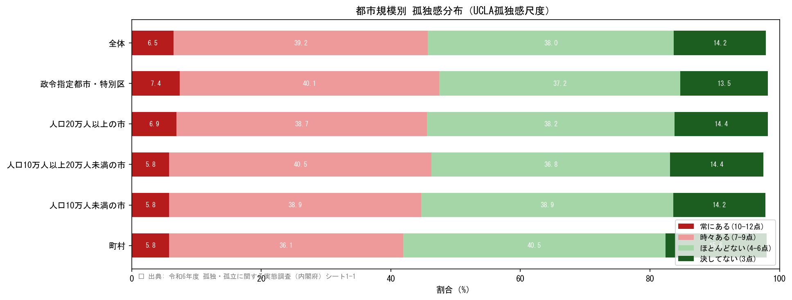
3 孤独感の属性別分析
性別・年齢・世帯構成・職業・年収・社会的つながりといった多様な属性から孤独感の高リスク層を特定する。 特に若年層（20〜30代）での高率は、従来の「高齢者＝孤独」というイメージを覆す重要な発見である。
3.1 性別・年齢階級別の孤独感
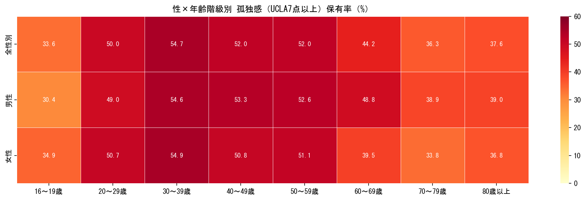
3.2 世帯構成・職業・年収別の孤独感
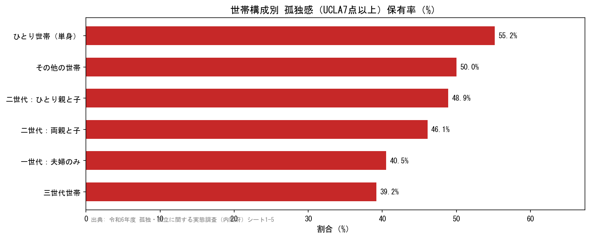
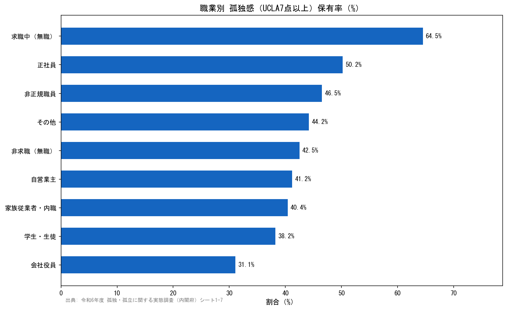
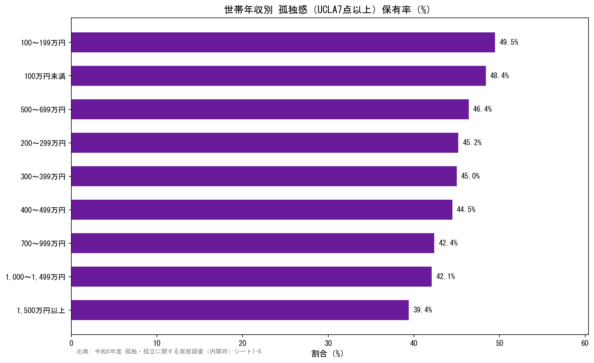
最も孤独感が高い
逆相関（高収入→低率）
孤独感を「深刻」と回答
3.3 社会的つながりと孤独感の関係
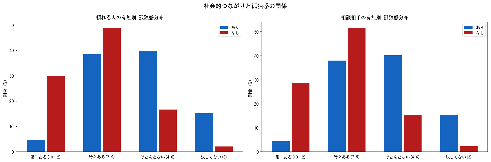
4 孤独感の継続期間とライフイベント
孤独感がどの程度継続しているか、また何をきっかけに孤独感が高まったかを分析する。 慢性的な孤独への対処と、移行期（ライフイベント）への予防的支援の重要性が示される。
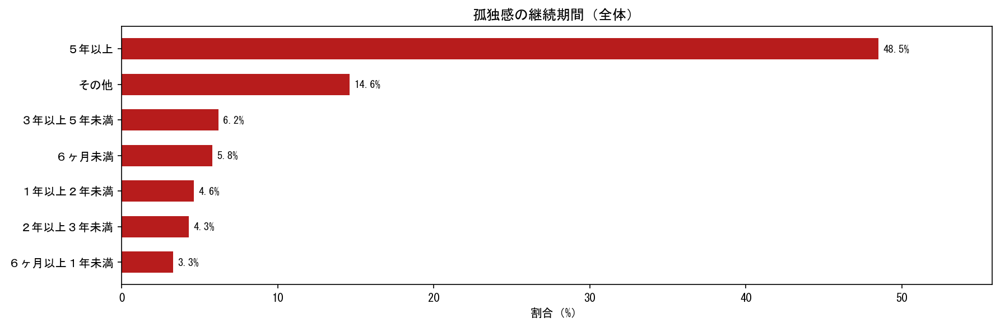
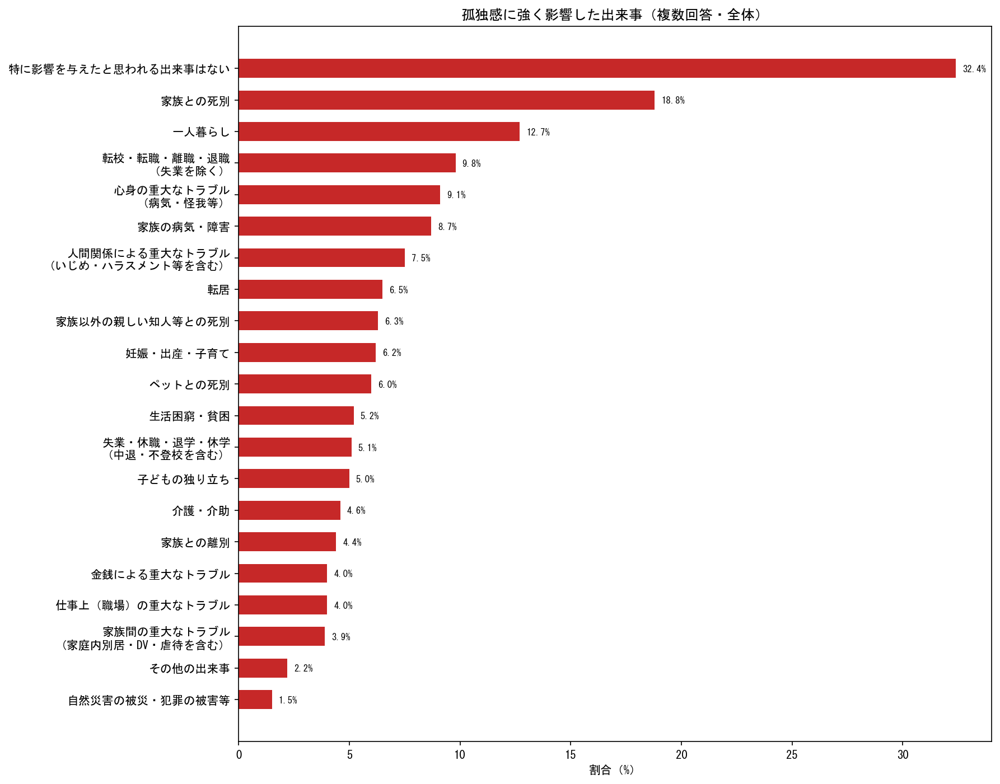
5 社会的交流の実態
非同居者とのコミュニケーション頻度を「直接会う」「電話・ビデオ」「SNS・メール」の 3手段で分析する。特にリアルなコミュニケーション機会の不足と孤独感の強い関連が注目点となる。
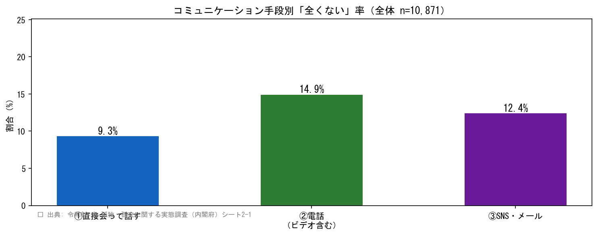
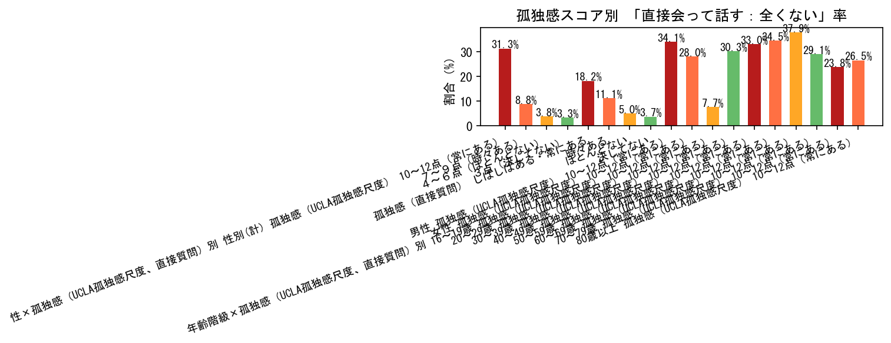
6 社会参加の実態
社会活動への参加状況を分析する。過半数が「不参加」という実態と、 孤独感が高いほど社会参加率が低いという「悪循環」の存在が重要な発見である。
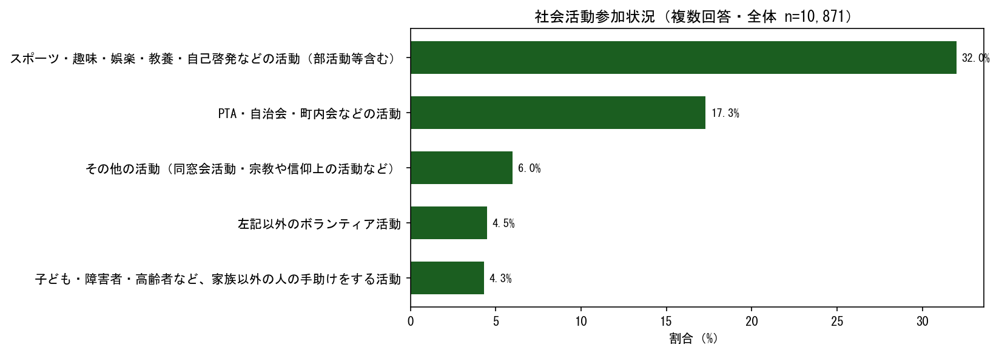
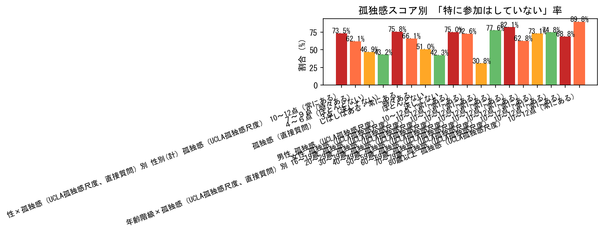
最近1週間の外出目的
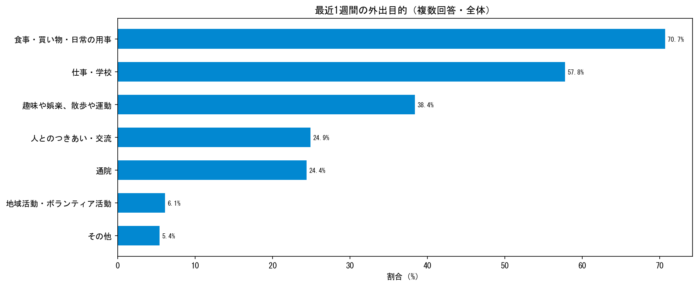
7 各種支援の実態
行政・NPO等からのフォーマルサポートと、家族・友人等のインフォーマルサポートの実態を分析する。
支援受給率わずか約7%という「支援の空白」と、その原因となる情報アクセス障壁が課題の核心である。
※ファイル04対象者はn=8,084（一定条件による絞り込み）
7.1 行政・NPO等からの支援状況と「受けていない理由」
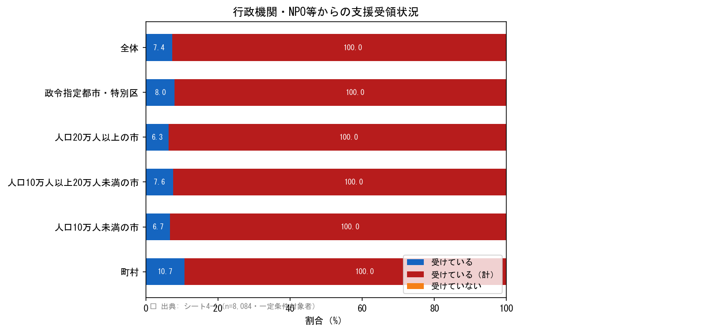
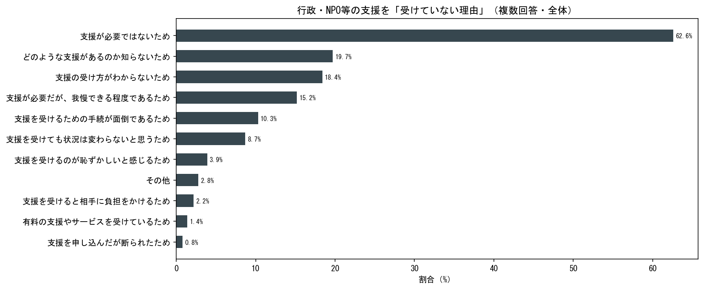
7.2 社会的サポートの有無と日常の不安・悩み
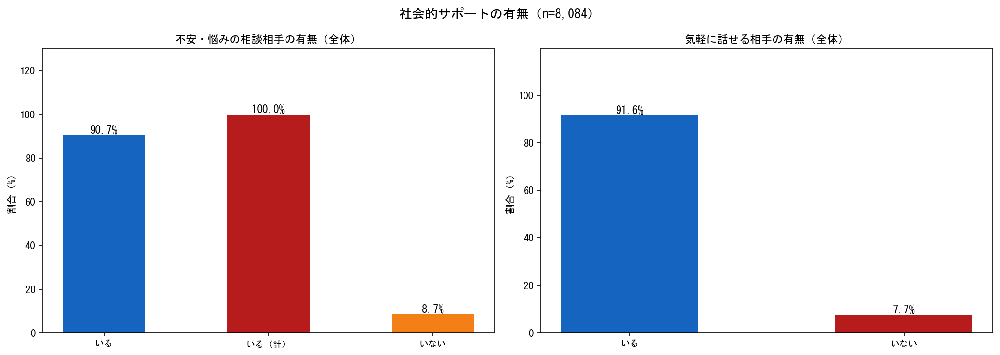
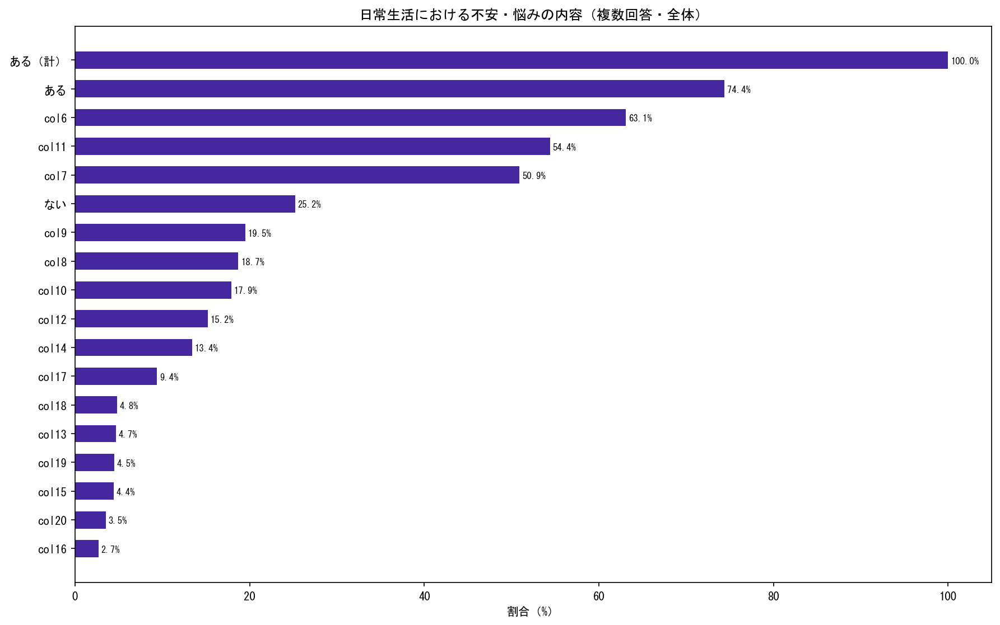
7.3 社会的サポート3指標の複合状況（完全孤立指標）
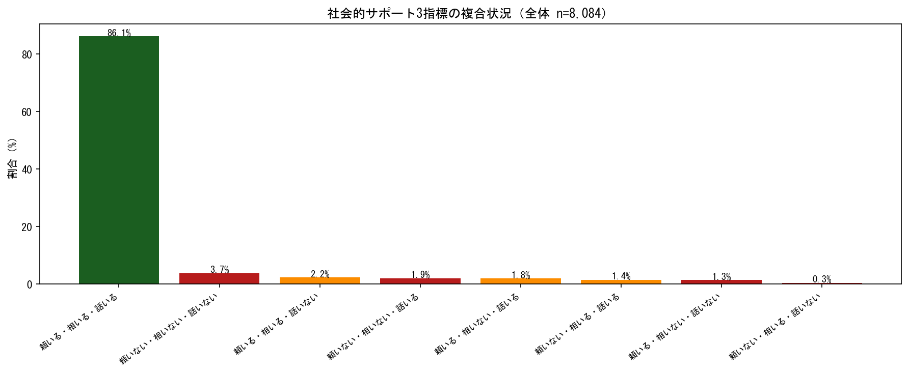
日本の16歳以上人口（約1.1億人）に換算すると 推計約407万人が完全孤立状態にある可能性がある。 これは単一機関では対応不可能な規模であり、多機関連携が不可欠である。
8 孤独感と生活満足度・健康状態
孤独感は健康状態・生活満足度と強く関連しており、 「孤独→不健康・生活不満→さらなる孤立」という悪循環が示される。 孤独問題への対処は医療・福祉コストの抑制にも直結する社会投資的課題である。
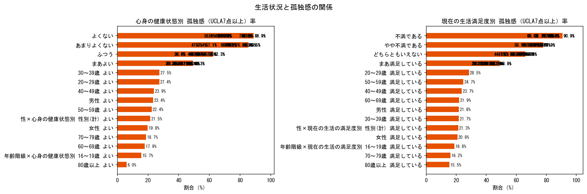
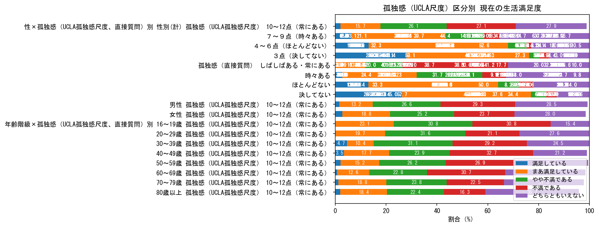
9 総合考察と政策的示唆
データ分析と最新の政策・研究動向を踏まえ、日本の孤独・孤立問題への対策として 特に重要な5つの施策の方向性を提示する。
主要知見サマリー
| テーマ | 主な知見 | 数値 |
|---|---|---|
| 孤独感の規模 | UCLA7点以上の孤独感あり。直接質問との大きな乖離（自己申告バイアス） | 45.7% vs 19.7% |
| 高リスク属性 | 単身世帯・無職・低年収・頼れる人なし層で高率 | 複合因子 |
| 若者問題 | 20〜30代で孤独感が高く、高齢者特有の問題ではない | 20〜30代に集中 |
| 社会参加 | 過半数が「特に参加はしていない」。孤独感高層ほど参加率が低い悪循環 | 50.6%が不参加 |
| フォーマル支援 | 行政・NPO支援の受給率はわずか約7%。情報アクセス障壁が主因 | 約7%のみ受給 |
| 完全孤立者 | 3つのサポートすべてない層が3.7%。推計約407万人 | 3.7%（≒407万人） |
| 孤独死 | 2024年に7.6万人が一人暮らしの自宅で死亡 | 76,020人/年 |
| 生活満足度 | 孤独感高スコア層で生活満足度・健康状態が著しく低い | 明確な逆相関 |
5つの政策的示唆
データの限界・留意点
| 限界・留意点 | 内容 |
|---|---|
| インターネット調査バイアス | 最も孤立した層（ネット非利用者・高齢単身者等）が過小評価される可能性がある |
| 横断研究の限界 | 因果関係の特定には縦断研究が必要（例：スマホ多用→孤独 vs 孤独→スマホ多用） |
| 対象者差異 | ファイル04（支援調査）はn=8,084と他ファイルのn=10,871と異なる条件で絞り込まれている |
| 地域粒度の限界 | 都道府県別・市区町村別の詳細分析には別途データが必要 |
📚 参考文献・引用資料
-
内閣府「孤独・孤立の実態把握に関する全国調査（令和6年実施）」
cao.go.jp/... r6.html -
内閣府「調査結果のポイント（令和6年度）」（PDF）
tyosakekka_point.pdf
-
内閣府「孤独・孤立対策推進法」（2024年4月施行）
cao.go.jp/... suishinhou.html -
内閣府「孤独・孤立対策に関する重点計画」（令和6年6月策定）
cao.go.jp/... zenkokuchousa.html -
日本経済新聞「65歳以上の孤独死5.8万人 24年、警察庁が初集計」（2025年4月）
nikkei.com/... -
野村総合研究所「今こそ企業が向き合うべき孤独・孤立」（2025年5月）
nri.com/... 000046467.pdf -
OECD "Supporting Japanese people affected by severe social isolation" (2025)
oecd.org/...
-
Holt-Lunstad J. et al. (2015). "Loneliness and Social Isolation as Risk Factors for Mortality" Perspectives on Psychological Science. — 孤立が死亡リスクを29%上昇
-
Dunbar R.I.M. et al. (2019). "Computer-mediated communication accelerates the pace of negotiation" — 対面コミュニケーションの不代替性
-
WHO "Social determinants of health: the solid facts" (2003) — 健康の社会的決定要因フレームワーク
-
Vivek Murthy, "Together: The Healing Power of Human Connection" (2020) — 孤独と公衆衛生